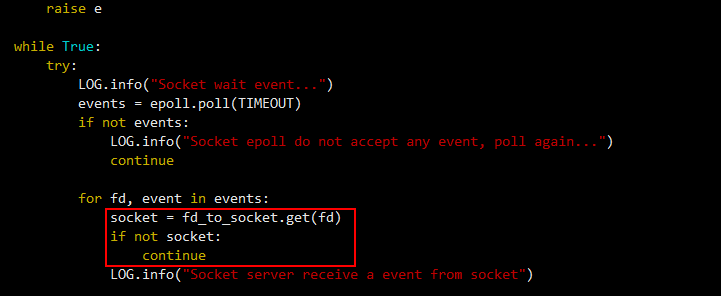

Symptom
On the OceanProtect page, a message indicating that the job progress is not updated within a certain period of time is displayed, or the error details contain "Failed to execute the subjob." If "Failed to execute the subjob." is displayed, click View Details. The details contain "Error doing sync read from disk" or "Failed during data mover". Error code 11 ("Resource temporarily unavailable") is printed in the client's virtualization plug-in log and socket-related logs. After three retries, the backup or restoration still fails.
Possible Cause
In versions earlier than FusionCompute 8.3.0, multiple sockets are concurrently executed. The sockets are stored in the map. The method of cyclically searching for sockets uses "[]" instead of "get". If a socket cannot be found, an error is reported. As a result, the main thread cyclically reports this error, and the read and write operations of normal sockets are suspended.
Troubleshooting
- Log in to the CNA host in the FusionCompute production environment.
- Run the su - root command to switch to user root.
- Run the following command to change the method of searching for the socket based on the content in the red box in the following figure:
vim /usr/lib/pythonX.X/site-packages/vna/storage/utils/socket_server.py

- Replace pythonX.X in the command with the Python version of the instance.
- If multiple Python versions are installed in the system, find the Python version that contains the /site-packages/vna/storage/utils/socket_server.py path and then run this command.
Add the following content to the position marked in the red box in the following figure. Use spaces instead of Tab to indent the modified content. Otherwise, the modification fails.
socket = fd_to_socket.get(fd) if not socket: continue